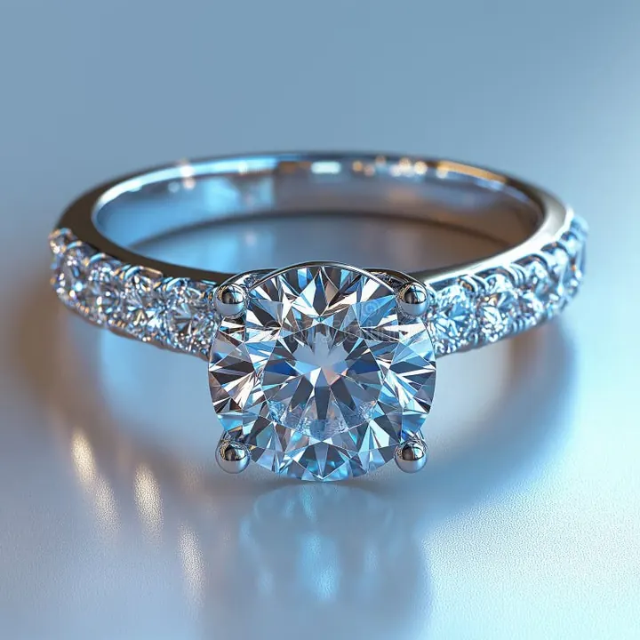

克拉重量與「克拉溢價」：多 0.3 分為何貴一倍
克拉不只是「大」的單位，更是市場定價的心理閘門：0.99 與 1.00 克拉之間，隔著一條看不見的價格鴻溝。

核心定義
克拉（carat，縮寫 ct）是寶石的重量單位，1 克拉等於 0.2 公克，也就是 200 毫克；1 克拉又分成 100 分（point），所以 0.75 克拉的鑽石常被說成「75 分」。這個單位聽起來很科學，但它的出身其實非常生活化——中世紀的地中海商人，是用一種叫角豆樹（carob）的種子來當砝碼稱寶石的，因為傳說這種種子重量異常穩定，於是「carat」這個字就一路沿用至今。
「克拉溢價」（carat premium）指的是鑽石價格不是跟著重量線性成長，而是在某些「整數關卡」上突然跳升。最經典的關卡就是 1.00 克拉：一顆 0.99 克拉與一顆 1.00 克拉，重量只差 1%，但市場價常常可以差到 10%～30%，甚至更多。原因很簡單——全世界消費者都想買「一克拉」，而證書上只要少一個字，心裡的感受就完全不同。
| 重量（圓明亮式） | 約略直徑 | 約略價格感受 |
|---|---|---|
| 0.50 克拉 | 5.2 mm | 入門進階款 |
| 0.90 克拉 | 6.3 mm | 「差一點點」的遺憾區 |
| 1.00 克拉 | 6.5 mm | 價格跳升的整數關卡 |
| 2.00 克拉 | 8.2 mm | 另一道更大的關卡 |
特徵與分類
除了 1 克拉，還有幾個同樣知名的溢價關卡：0.30 克拉、0.50 克拉、1.00 克拉、1.50 克拉、2.00 克拉。這些數字之所以被市場「鎖定」，是因為它們對應到消費者心理與禮物市場的敘事——「求婚至少要 30 分」「一克拉是基本盤」這類約定俗成，直接把需求堆在這些點上。
溢價還有另一面：鑽石的重量是秤出來的，但「看起來多大」是切工決定的。兩顆同樣 1 克拉的圓明亮式鑽石，一顆切得深、一顆切得淺，桌面直徑可以差到 0.4 mm 以上——切深的那顆從檯面看會明顯「縮水」，甚至看起來像 0.85 克拉。所以買鑽石不能只問幾克拉，還要問檯面直徑（table diameter）與整體比例。
科學原理
為什麼角豆樹種子能當砝碼？現代研究發現，角豆種子的重量變異其實沒有傳說中那麼小，但中世紀商人不在乎——他們要的只是「夠穩定」的目視單位。真正讓克拉成為標準的，是 1907 年國際度量衡大會正式將 1 克拉定義為 0.2 公克，從此寶石界有了統一的公制克拉。
鑽石的密度是 3.52 g/cm³，比常見的石英（約 2.65）重不少，這代表同樣體積下鑽石更「扎實」。但一般人感受不到密度，只感受得到直徑——這正是「克拉 vs 視覺大小」容易被混為一談的物理根源。
鑑定與鑑別方法
- 用電子克拉秤測量精確重量（讀到小數點後三位）
- 用卡尺或專用比例儀量檯面直徑，判斷是否「顯大」或「顯小」
- 看證書上的 measurements（長×寬×高）欄位，自行推算視覺尺寸
- 注意「總重量 vs 裸石重量」：鑲嵌成品標的常是含戒台總重
市場行情與保養建議
行情上，克拉溢價是二手市場也要面對的現實：1.00 克拉的轉手價通常仍比 0.99 克拉高一截，因為買家習慣用整數關卡篩選。預算有限的人常反向操作——買 0.95、0.97 克拉，肉眼幾乎一樣，但價格友善許多。行情的另一個規律是「越大越不線性」：3 克拉以上的單克拉單價會再往上跳，這在投資與收藏時都要算清楚。
無論買多大，記住三件事：秤重看克拉、量尺看直徑、證書看比例。三者齊備，才不會被「一克拉」三個字綁架了判斷。
常見誤區
市場定價不看差不多，看閾值。1.00 克拉是公認的心理關卡，需求集中、價格跳升；0.99 克拉雖然便宜，但轉手與社交敘事上都吃虧。反過來說，若你純粹自戴且預算有限，0.97～0.99 反而是「花小錢辦大事」的聰明選擇。
完全錯誤。同樣 1 克拉，切割深度差 5% 就足以讓直徑差 0.3～0.4 mm。圓形鑽石檯面直徑是「顯不顯大」的關鍵數字，一定要看證書上的 measurements。
冷知識
1905 年在南非發現的庫里南（Cullinan）鑽石重達 3106 克拉，約等於 621 公克，後來被切磨成 9 顆大鑽與近百顆小鑽，最大那顆「非洲之星」嵌在英國王權杖上。相比之下，市面上一克拉在它面前只是零頭。
在公制克拉出現前，各國克拉長得都不一樣（有 0.188～0.213 公克的版本），交易糾紛層出不窮。直到 1907 年統一為 0.2 公克，寶石秤才真正有了「世界共同語言」。
反直覺觀點
0.04 公克幾乎是一粒鹽的重量，但在整數關卡兩側，單克拉單價與總價可以差到 20% 以上。這不是品質差異，是心理閾值與市場需求被「鎖」在整數點上——買鑽石時，這一課比任何鑑定知識都更影響荷包。
鑽石是「重量藏在深度裡」的寶石。同樣 1 克拉，切太深時大部分重量埋在檯面下，正面看又小又暗；切太淺則檯面大但光線從亭部漏光。所以「一克拉」三個字，從來不等於「看起來一克拉」。